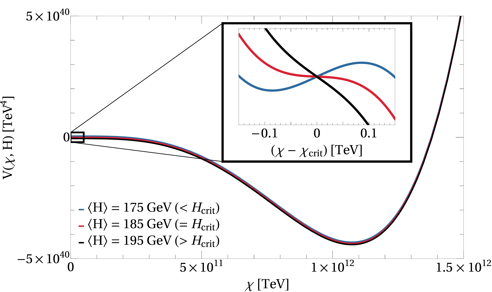
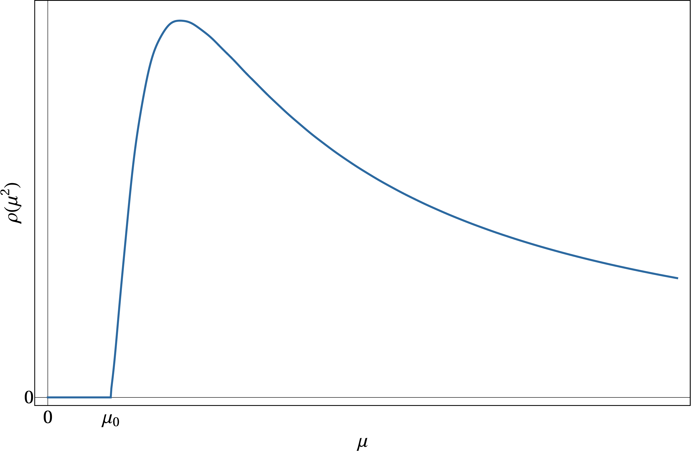
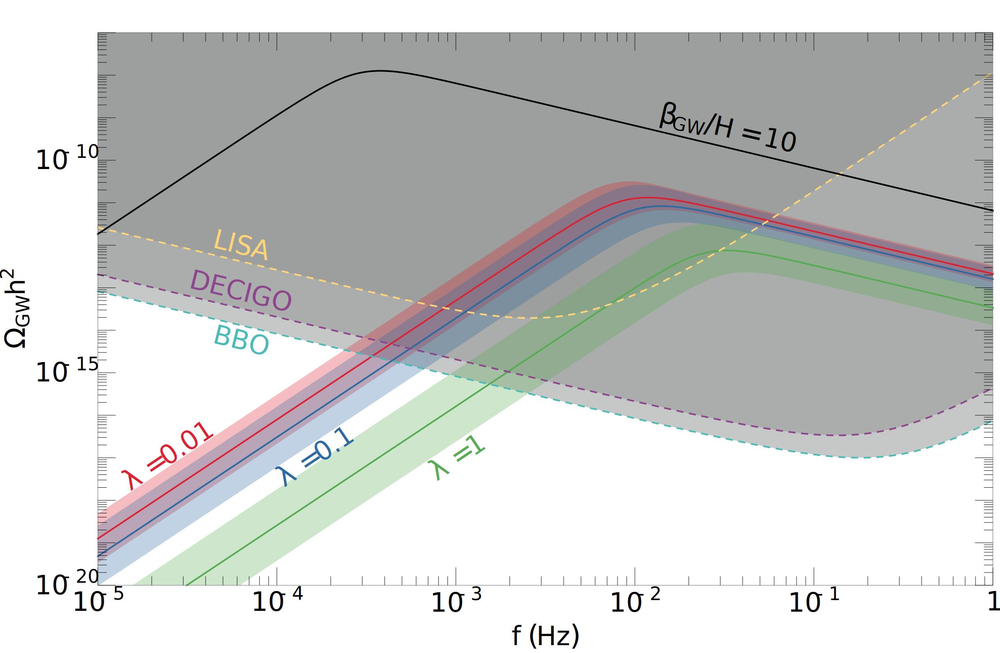

Here are some brief descriptions of a few things I've worked on: the hierarchy problem, dark matter, conformal sectors, and extended Higgs sectors.
For a more complete list, check out my CV and publications.
hierarchy problem
I'm interested in building new approaches to the Higgs hierarchy or naturalness problem. In Crunching Dilaton, Hidden Naturalness (2007.14396), we introduced a new way to solve the hierarchy problem. The idea is to have a multiverse where some scanning sector sets the value of the Higgs mass in each causal patch. We then introduce some new dynamics so that all patches except those where the Higgs mass lies in a finite range undergo a cosmological crunch in the early universe. The only patches that survive through inflation to the present day are those where the Higgs mass is small, generating an apparent fine-tuning.
The main experimental signature of our model is a light new scalar, with a mass around a GeV or so, that mixes weakly with the Higgs. Most of the parameter space can be probed by experiments within the next decade. I wrote a little piece in the Forward Physics Facility (FPF) white paper (2203.05090) about the opportunity to look for this new scalar at the FPF.
In a follow-up paper, Higgs Squared (2210.02456), we thought more carefully about the kinds of operators that can trigger the type of phase transition which is needed for cosmological selection of a small Higgs mass. The operator has to be sensitive to the Higgs vacuum expectation value. We constructed the first example in the literature of a trigger operator that is completely neutral under the Standard Model gauge group. We then applied this to solve the hierarchy problem in a manner similar to the crunching dilaton, but which leads to radically different phenomenology.
Relevant papers: 2007.14396, 2203.05090, 2210.02456.
dark matter
I am also interested in building models of dark matter and exploring their phenomenology. In The Continuum Dark Matter Zoo (2210.16326) we described a class of dark matter models where the dark matter is a continuum state, rather than an ordinary particle. (This is somewhat analogous to the distinction between continuum and bound states in ordinary nonrelativistic quantum mechanics.) This paper built on some previous work on continuum dark matter, see 2105.07035 and 2105.14023. The basic idea is that continuum states exhibit very unique kinematics, which leads to an enormous suppression of direct detection bounds. Thus, simple WIMP-like models of dark matter that would be ruled out for ordinary particles are totally allowed if the dark matter is a continuum state.
In FIMPzilla dark matter and conformal sectors (2306.06161) I turned my attention to ultraheavy dark matter. The main point was that one can minimally extend composite Higgs models by adding an elementary scalar, which is naturally ultraheavy and feebly-coupled. This scalar can be a good dark matter candidate produced by ultraviolet freeze-in. The main experimental constraints currently come from bounds on the tensor-to-scalar ratio measured in the CMB power spectrum, but I am interested in exploring other avenues for detection.
Most recently, I have been working on light and ultralight dark matter. In Forbidden conformal dark matter at a GeV we introduced a model of light thermal relic dark matter which arises as a composite of a conformal sector. If we require that the dark matter mass is around a GeV, we're naturally led to a picture of "forbidden dark matter" in which the relic abundance is set by the freezeout of annihilations to a heavier dark sector particle (namely, the dilaton of the conformal sector). The conformal phase transition in this model can source nHz-scale stochastic gravitational waves that could explain the signal observed at NANOGrav and other pulsar timing arrays. Our parameter space can be entirely probed by upcoming searches for long-lived particles and future direct detection experiments.
In Axion dark matter from inflation-driven quantum phase transition, we introduced a new mechanism for producing ultralight axion and axion-like dark matter from inflationary quantum fluctuations. The key idea is that a coupling of the inflaton to the ultralight dark matter field can exponentially enhance its production, so it can be produced in a sufficient amount to account for all of the dark matter. Our mechanism predicts much larger couplings of the axion to the Standard Model than the usual misalignment mechanism.
Relevant papers: 2210.16326, 2306.06161, 2308.16219, 2402.08716.
dilatons and CFTs
Theories with conformal sectors in which scale invariance is spontaneously broken show up in a lot of different model-building contexts. Actually, I've already mentioned several examples above. For instance, a spontaneously broken conformal sector is a key part of the Crunching Dilaton, Hidden Naturalness (2007.14396) paper discussed above. Spontaneously broken conformal sectors also provide a concrete way to realize the continuum states which we studied in The Continuum Dark Matter Zoo (2210.16326).
These models generally feature a new particle called a dilaton, which is the Goldstone boson of spontaneously broken scale invariance. In a-Anomalous Interactions of the Holographic Dilaton (2205.15324), we explored the low-energy effective action for the dilaton. There's a particular term in the action whose coefficient is fixed by an anomaly in the CFT. This can have important consequences for phenomenology and cosmology!
I have also worked on the phase transition associated to the spontaneous breaking of conformal symmetry. The prototypical way to stabilize the scale of broken conformal symmetry (Goldberger–Wise stabilization) typically leads to a strongly first-order phase transition. In Relevant Dilaton Stabilization, we introduced a new stabilization mechanism which results in a weaker phase transition. This leads to distinctive stochastic gravitational wave signals that one could look for at future detectors.
Relevant papers: 2205.15324, 2301.10247.
extended Higgs sectors
Starting the summer after undergrad and continuing into grad school, I worked on the Georgi-Machacek model. In this model, the Standard Model Higgs sector is extended by two SU(2) triplets, in such a way that naturally preserves the rho-parameter (the W to Z boson mass ratio; equivalently, the electroweak T parameter) at tree level. Another interesting feature in this model is the existence of doubly charged Higgs bosons. More generally, it serves as a nice prototype for extensions of the Higgs sector containing SU(2) representation larger than doublets.
In Updated constraints on the Georgi-Machacek model from LHC Run 2 (2003.02272), we did an extensive analysis of the experimental constraints on this model from direct searches for new Higgs bosons, as well as from measurements of the observed 125 GeV Higgs. Some of the code I wrote was later integrated into the next release of the Georgi-Machacek model calculator, GMCALC. We also introduced a new benchmark for studying a particular region of the model's parameter space, the so-called "low-m5" region, in Benchmark for LHC searches for low-mass custodial fiveplet scalars in the Georgi-Machacek model (2003.05536).
An extended Higgs sector, specifically a two Higgs doublet model, is also a key part of the solution to the hierarchy problem we presented in Higgs Squared (2210.02456). In that model, our cosmological selection of a small Higgs mass can naturally push the two Higgs doublet model towards a regime where the additional CP-even Higgs is very light and weakly coupled to the Standard Model. (In two Higgs doublet jargon, the model is naturally in the so-called alignment limit. This is interesting in part because being near the alignment limit is required for consistency with experiment, and our model achieves it without any fine-tuning.)
Relevant papers: 2003.02272, 2003.05536, 2210.02456.


